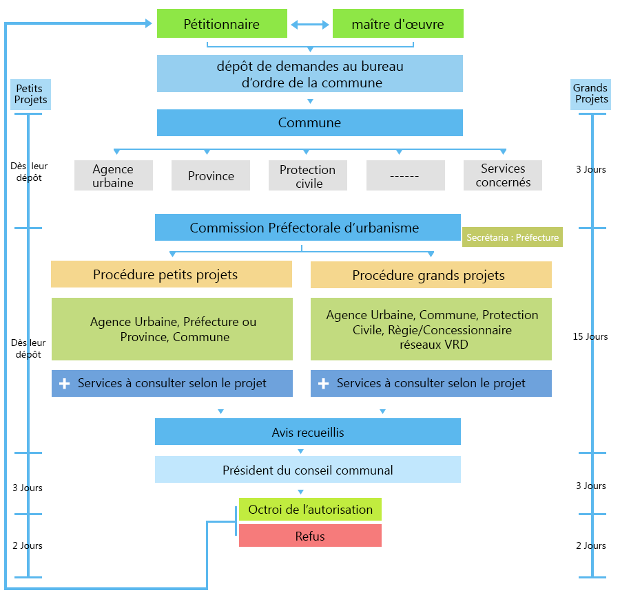
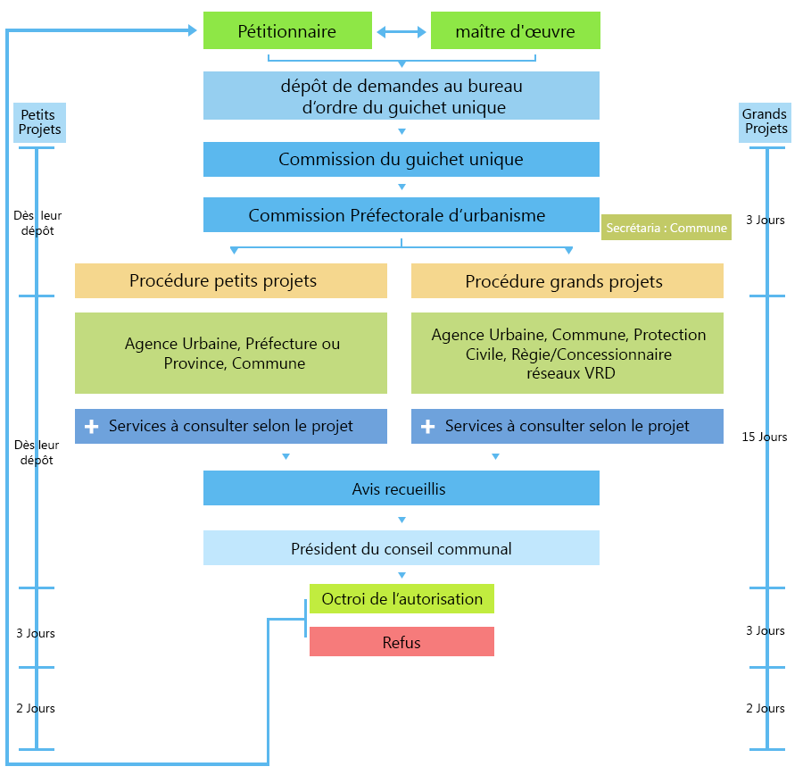

تخضع تراخيص التعمير (رخص البناء، التجزيء، التقسيم، الهدم، إلخ) للمساطر الوطنية الجاري بها العمل. يرجى اختيار المسار المقابل لعدد سكان الجماعة المعنية:
الجماعات التي يقل عدد سكانها عن 50,000 نسمة

- تكوين الملف (الاستمارات، التصاميم، المذكرة، الرسم العقاري أو الشهادة، الدراسات التقنية عند الاقتضاء)؛
- إيداع الطلب لدى السلطة المختصة (الجماعة أو المصلحة المعينة) داخل دائرة النفوذ؛
- تتم إحالة الملف على الوكالة الحضرية (AUDOE) لإبداء الرأي المطابق أو المراقبة حسب الحالات؛
- تتبع دراسة الملف؛ واستكماله في حالة طلب وثائق إضافية؛
- سحب الترخيص أو سند الشغل وفقاً للمسطرة المعمول بها.
الجماعات التي يفوق عدد سكانها 50,000 نسمة

- إيداع الملف لدى مصالح التعمير بالجماعة المعنية (الشباك الوحيد أو مصلحة الدراسة المعينة)؛
- دراسة الملف وفقاً للآجال القانونية والدوريات التطبيقية؛
- مراقبة المطابقة وزيارات الأوراش من طرف الوكالة الحضرية على صعيد التراب الجهوي؛
- بالنسبة للعمليات المعقدة: يمكن إضافة استشارة مسبقة، بحث عمومي أو مساطر خاصة.
للقيام بمراجعة أولية لملفكم قبل الإيداع الرسمي، يرجى استخدام الخدمة المحلية التالية (دون مغادرة الموقع):
الدراسة القبلية عبر الإنترنت (استمارة محلية)
الولوج إلى خدمة الدراسة القبلية